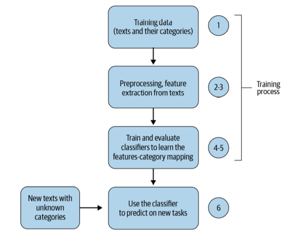
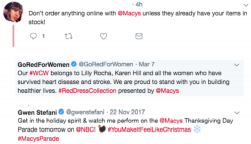

6.1 Text Classification Pipeline
The full path from raw text to a label.
1. Classification is supervised
Supervised learning means the training rows come with the answer. Those answers are labels.
Two jobs dominate:
- Classification: a discrete bucket. Spam vs ham is the running example. The label is a class.
- Regression: a number. Price of a car from mileage and brand. The label is continuous.
This week is classification of text. The input is a document or snippet. The output is a predefined category.
Algorithms you already know from a first ML course still apply once the text is a vector:
| Algorithm | Typical role in this course |
|---|---|
| (k)-NN | Simple baseline, no training of weights |
| Logistic regression | Strong linear baseline on TF–IDF |
| Linear SVM | Same, often a bit better on high-dimensional text |
| Trees / forests | Nonlinear, weaker on raw sparse bags |
| Neural nets | Weeks 7–8 once you have embeddings |
Unsupervised methods (clustering, PCA, t-SNE, LDA) have no labels. They organize or compress. They are not this week’s classifier, though you may use them to look at the data.
The main text is Practical Natural Language Processing.
2. What text classification is
You assign each document a label from a fixed set: sentiment, topic, spam, language, priority. The model learns patterns from a labeled collection, then labels new text.
It is the most common applied NLP job in this course. If you can take a CSV of texts and labels and ship a scored model, you can do the rest of the semester’s projects.
3. The pipeline
Every system has the same spine. Representation is Week 4–5. This week you put a classifier and an evaluation on the end.

In order:
- Collect and label. The bottleneck is usually labels, not models.
- Clean and tokenize. Lowercase, strip junk, decide what a token is.
- Vectorize. BoW, TF–IDF, or embeddings. Fit the vectorizer on train only.
- Train. Pick a model family and its hyperparameters on a validation split or inner CV (note 6.2).
- Evaluate. Accuracy if classes are balanced; precision, recall, F1 if they are not.
- Ship and watch. New topics and new slang shift the distribution. A model that was fine in March can fail in September.
Skip a box and you will debug the wrong thing. A “bad SVM” is often a leak (vectorizer fit on the whole corpus) or a metric that hides a majority class.
4. Where this shows up
| Application | What the label is |
|---|---|
| Content organization | Topic or desk (sports, politics) |
| Misinformation | Claim is supported / not, or source is reliable / not |
| Authorship | Which writer (or which account) |
| Customer support | Intent, queue, or urgency |
| E-commerce | Category, aspect sentiment, fake-review flag |

Support and e-commerce are the pictures in lecture because the cost of a wrong bucket is obvious: the ticket goes to the wrong team, or the product lands in the wrong aisle. Build the pipeline so you can measure that cost, not just accuracy.
5. What note 6.2 adds
This note is the map. Note 6.2 is the classical models and the evaluation you will use in lab: (k)-NN, SVM, cross-validation, parameters vs hyperparameters, precision and recall.
Do not start Week 7 until you can draw the flowchart and name a metric for an imbalanced ticket queue.
6. Practice
-
Is topic modeling (LDA) text classification? Why or why not?
-
You fit
TfidfVectorizeron train+test together, then split. What did you leak? -
Pick one application in the table. Name the classes, who labels the data, and what a false positive costs.